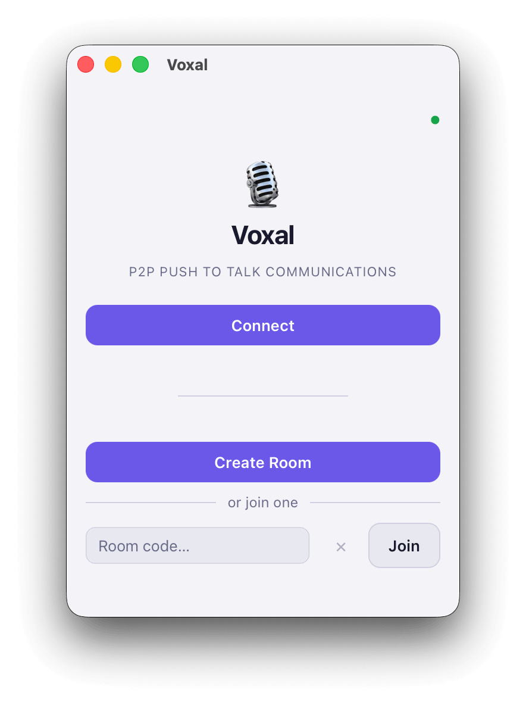
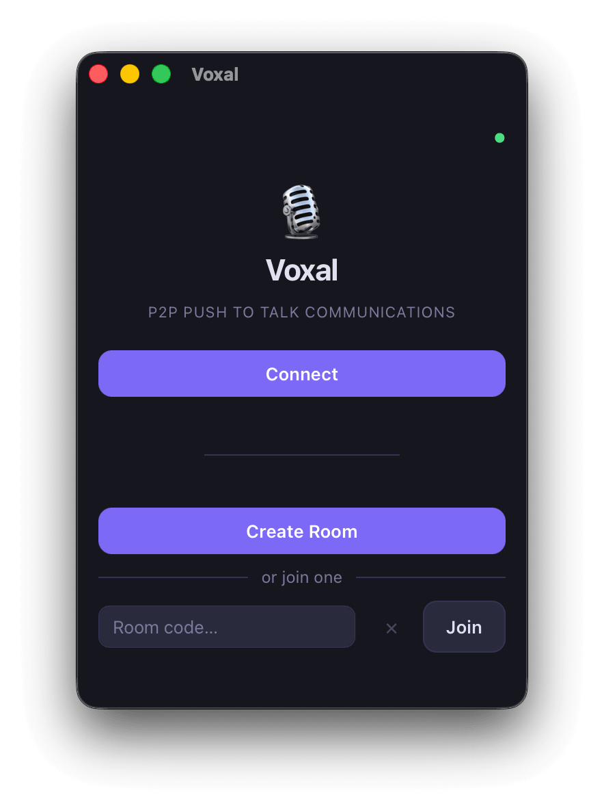

Peer-to-peer voice that never goes through a media server. No accounts, no installation, no server required — and the room survives when the host leaves.


WebRTC full-mesh audio (Opus, 16 kHz mono). Never routed through a media server, under any setting.
Global shortcut on desktop, touch button on mobile and web, hands-free when you want it.
A deputy takes over when the host leaves. Nobody reconnects, no audio link drops.
Adaptive video stage, screen sharing, local background blur. Optional SFU for video only.
TURN / STUN with short-lived credentials, even for anonymous users.
Plain HTML/JS, wrapped by Tauri on desktop and Capacitor on mobile. Embeddable as an iframe.
star — host ↔ each peer over a PeerJS data channel. The room code is the host's peer ID.
full mesh — every peer ↔ every peer, always direct. A TURN relay only forwards encrypted packets.
mesh or SFU — own link set; may use Cloudflare's Realtime SFU in larger rooms.
See it drawn: topology diagrams · build a room yourself in the Room Lab · walk it component by component in the flow explorer.
Join sequence, star vs. mesh, what each server sees, migration, video above two people.
Add and remove peers and watch the links form.
The architecture, one component and one flow at a time.
What a room costs: bandwidth, CPU, memory, join time.
Watch it, or export it as MP4/WebM in 16:9, 1:1 or 9:16.
# clone, install, start the desktop app with hot reload git clone https://github.com/ErwannRobin/Voxal.git make install make dev # or: make run-web → http://localhost:8080 make test # Rust + API + Playwright E2E